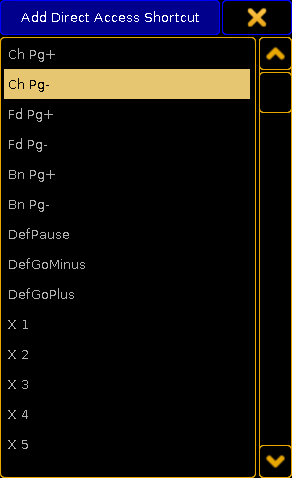
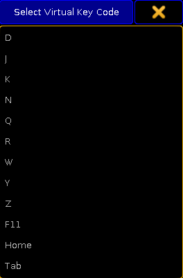

Important:
Keyboard shortcuts are only available on a grandMA2 onPC.
You can add more keyboard shortcuts or delete existing keyboard shortcuts.
Add keyboard shortcuts
Click Setup and then under tab console click Edit Keyboard Shortcuts.
The Edit Keyboard Shortcuts window opens.
Choose if you would like to add a shortcut with:
- Direct Access
- Ctrl Access
- Alt Access
- Ctrl Alt Access
Click Add below the table you like to add the shortcut.
The Add Shortcut pop-up opens regarding to the selected table.

Add Direct Access Shortcut pop-up
Click at the hardkey you like to add.
The Select Virtual Key Code pop-up opens.

Select Virtual Key Code pop-up
Click at the PCkey you like to have.
The Select Virtual Key Code pop-up closes.
The keyboard shortcut is added.
Delete keyboard shortcuts
Click Setup and then under tab console click Edit Keyboard Shortcuts.
The Edit Keyboard Shortcuts window opens.
Click at the keyboard shortcut you like to delete.
Click below the table of the to delete shortcut at Delete.